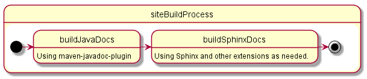

Configuration¶
The sphinx-maven plugin has these configuration options:
| Parameter | Description | Default value |
|---|---|---|
sourceDirectory |
The directory containing the documentation source. | ${basedir}/src/site/sphinx |
outputDirectory |
The directory where the generated output will be placed. | ${project.reporting.outputDirectory} |
outputName |
The base name used to create the report’s output file(s). | Python-Sphinx |
name |
The name of the report. | Sphinx-Docs |
description |
The description of the report. | Documentation via sphinx |
builder |
The builder to use. See the Sphinx commandline documentation for a list of possible builders. | html |
verbose |
Whether Sphinx should generate verbose output. | true |
warningsAsErrors |
Whether warnings should be treated as errors. | false |
force |
Whether Sphinx should generate output for all files instead of only the changed ones. | false |
tags |
Additional tags to pass to Sphinx. See the Sphinx tag documentation for more information. | |
asReport |
Whether documentation should be generated as a project report (keep default Maven site). | false |
Using PlantUML¶
The sphinx-maven plugin has support for converting uml described using PlantUML text format within a
.rst file to an image. It automatically references the image as part of the documentation in the appropriate
place where the UML was defined in the reStructured Text source file. As mentioned before, PlantUML requires
GraphViz to be installed on the local machine.
GraphViz¶
GraphViz is a software package of opensource tools for drawing graphs described in DOT language scripts. More information regarding GraphViz can be found in their website. Windows installer can be downloaded from the website and the package is available as part of package management provided by the individual operating system vendor.
Remember this is required only for building html pages containing GraphViz generated images. You don’t need this library for hosting the generated documentation.
PlantUML Config¶

You will need to add some additional configuration options to your conf.py file (usually in
src/site/sphinx) to tell Sphinx how to work with .. uml:: directives. The steps involved are
You will need to add ‘sphinxcontrib-plantuml’ as an extension within the extension’s list defined within
conf.pyYou will also have to import an environment variable’s value within
conf.py.:import os plantuml = os.getenv('plantuml')
Please note that it is absolutely necessary that the environment variable’s value is assigned to the variable plantuml, so that the extension works as expected.
A note on memory usage¶
Sphinx is run via Jython which will generate lots of small classes for various Python constructs. This means that the plugin will use a fair amount of memory, especially PermGen space (a moderate plugin run will likely use about 80mb of PermGen space). Therefore we suggest to either run maven with at least 256mb of heap and 128mb of PermGen space:
MAVEN_OPTS="-Xmx256m -XX:MaxPermSize=128m" mvn site
Sample Documentation Config¶
Sphinx looks at conf.py in the documentation source directory for building the final HTML file. This file contains some basic settings for getting the desired output. The configuration used for generating the plugin documentation is given below:
# -*- coding: utf-8 -*-
import sys, os
from recommonmark.parser import CommonMarkParser
project = u'My Project'
copyright = u'YYYY, John Doe'
version = '1.0'
release = '1.0.0'
# General options
needs_sphinx = '1.0'
master_doc = 'index'
pygments_style = 'tango'
add_function_parentheses = True
extensions = ['sphinx.ext.autodoc', 'sphinxcontrib.plantuml', 'javasphinx']
templates_path = ['_templates']
exclude_trees = ['.build']
source_suffix = ['.rst', '.md']
source_encoding = 'utf-8-sig'
source_parsers = {
'.md': CommonMarkParser
}
# HTML options
html_theme = 'sphinx_rtd_theme'
html_short_title = "my-project"
htmlhelp_basename = 'my-project-doc'
html_use_index = True
html_use_smartypants = True
html_show_sourcelink = False
html_static_path = ['_static']
# PlantUML options
plantuml = os.getenv('plantuml')